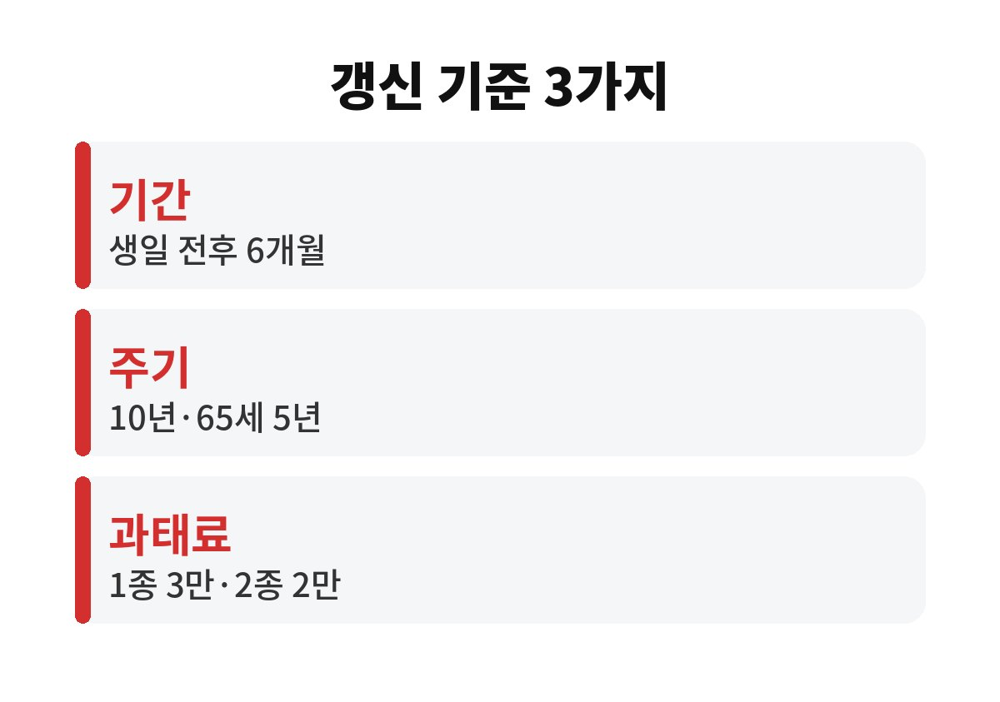
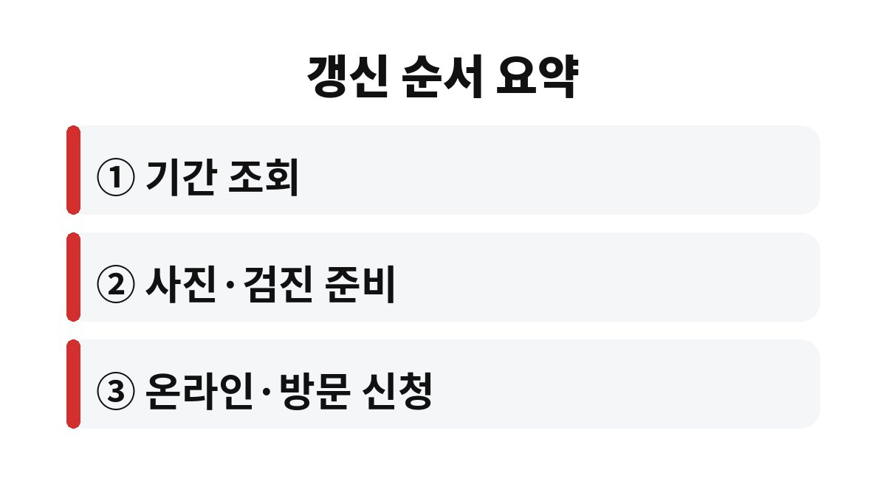

운전면허 갱신 기간은 2026년부터 연도 단위가 아니라 내 생일을 기준으로 앞뒤 6개월씩, 모두 1년으로 바뀌었다.
예전처럼 12월 31일만 기억하고 있으면 사람에 따라 마감을 몇 달이나 넘길 수 있다.
기간을 넘기면 과태료가 붙고, 1종은 1년을 더 넘기면 면허가 취소된다.
제도가 바뀌기 전에는 갱신 대상 연도의 1월 1일부터 12월 31일까지가 기간이었다.
그래서 해마다 12월이면 운전면허시험장 대기 줄이 길었다.
지금은 생일 6개월 전부터 생일 6개월 뒤까지가 운전면허 갱신 기간이다.
생일이 3월 초인 사람이라면 기간 끝이 그해 9월 초가 된다.
연말을 기다리다가는 이미 지난 뒤다.
다만 바뀐 기준이 적용되기 전에 기간이 이미 정해진 사람은 예전 기간을 따르는 경우가 있다.
그래서 내 기간은 짐작하지 말고 조회 결과로 확인한다.
면허증에도 기간이 인쇄돼 있지만 오래된 면허증은 바뀐 기준이 반영되지 않았을 수 있다.
지갑 속 카드보다 조회 화면의 날짜를 믿는 편이 안전하다.
1종은 시력 같은 신체 조건을 다시 확인하는 적성검사를 받는다.
2종 보통은 적성검사 대신 면허증을 새로 발급받는 갱신 절차를 밟는다.
기간을 넘겼을 때 과태료는 1종 3만 원, 2종 2만 원으로 다르다.
1종은 적성검사 기간이 끝난 뒤 1년이 지나도록 받지 않으면 면허가 취소된다.
과태료만 내면 끝나는 일이 아니라는 점에서 1종 운전자는 더 서둘러야 한다.
일반 운전자는 10년마다 돌아오지만 65세부터는 5년, 75세부터는 3년으로 짧아진다.
75세 이상은 갱신 전에 고령 운전자 교통안전교육을 마쳐야 한다.
부모님 면허를 대신 챙겨 드린다면 주기가 짧아졌다는 것부터 알려 드린다.
| 구분 | 기준 | 기간을 넘기면 |
|---|---|---|
| 갱신·적성검사 기간 | 생일 전 6개월~생일 후 6개월 | 과태료 부과 대상 |
| 1종 적성검사 | 일반 10년마다 | 과태료 3만 원, 1년 넘기면 면허 취소 |
| 2종 갱신 | 일반 10년마다 | 과태료 2만 원 |
| 65세 이상 | 5년마다 | 같은 기준 적용 |
| 75세 이상 | 3년마다, 교통안전교육 이수 | 교육 없이는 갱신 불가 |

생일 기준은 연말 쏠림을 줄였다는 점에서 반길 만하다.
대신 가족마다 마감일이 제각각이라 한 번에 챙기기는 오히려 어려워졌다.
운전면허 갱신 알림 문자를 받지 못했다고 기간이 늘어나지는 않는다.

온라인 신청은 편하지만 건강검진 기록이 없거나 사진 규격이 맞지 않으면 반려된다.
마감이 한두 주밖에 남지 않았다면 시험장을 직접 찾는 편이 확실하다.
이미 기간을 넘겼더라도 과태료 고지서를 기다릴 이유는 없고, 운전면허 갱신부터 바로 하면 된다.
모바일 운전면허증을 쓰고 있어도 갱신 기간은 실물 면허증과 똑같이 적용된다.
갱신을 마치면 앱에서도 새 면허 정보로 다시 발급받아야 검문이나 렌터카 계약 때 막히지 않는다.
해외에 오래 머무는 등 기간 안에 갱신하기 어려운 사정이 있으면 기간이 끝나기 전에 연기 신청이 가능한지 시험장에 묻는다.
지금 할 일은 하나다.
안전운전 통합민원에서 내 기간 끝 날짜를 확인해 달력에 적는 것이다.
1종인데 기간을 넘긴 지 1년 가까이 됐다면 혼자 판단하지 말고 가까운 운전면허시험장 민원실에 먼저 문의한다.
참고 자료: 도로교통공단 안전운전 통합민원 「적성검사·면허갱신 안내」(2026년 11월 확인) · 경찰청 「운전면허 적성검사 기간 생일 기준 개편」 안내(2026년 11월 확인)
※ 2026년 기준 공공기관 안내를 바탕으로 정리한 글이며, 차종과 연식에 따라 기준이 다를 수 있어 차량 설명서와 공식 안내를 함께 확인하길 바란다.